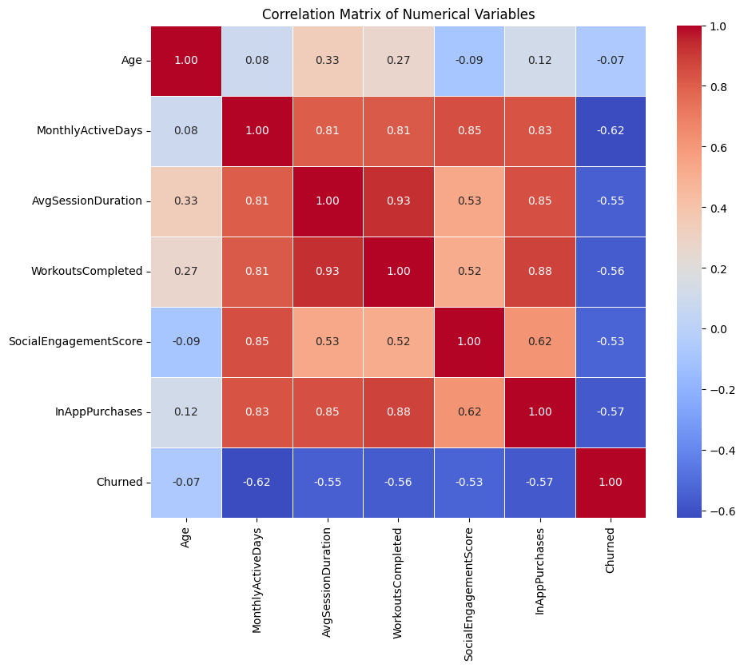

The problem
Keeping subscribers usually costs less than winning new ones, but only if a team knows who is about to
leave. In this dataset of fitness app users, 56% churned. The question was which users are likely to churn,
and what behavior gives it away.
What I did
-
Prepared the data: Took a 95% random sample (1,900 of 2,000 users), encoded the
categories, and scaled the numeric variables.
-
Compared four models: A decision tree and a neural network, each with all 8 attributes and
a reduced set of four (age, monthly active days, workouts completed, subscription tier), using the course's
specified settings. 5-fold cross-validation tested every model on users it hadn't seen.
-
Checked more than accuracy: The full neural network scored 100% recall by flagging every
user as churn, so I rejected it.
What I found
The reduced decision tree won: 78% accuracy (guessing "everyone churns" gets 56%), 74% precision, 93% recall,
and 0.83 AUC. The all-attributes tree scored a similar 0.84 AUC and was slightly better on precision, but the
reduced tree is simpler. It caught about 93 of every 100 users who churned, but also flagged about 4 in 10
users who stayed.
Model results, 5-fold cross-validation
| Model |
Accuracy |
Precision |
Recall |
AUC |
| Reduced decision tree |
77.6% |
73.9% |
93.5% |
0.83 |
| Full decision tree |
77.5% |
75.2% |
89.6% |
0.84 |
| Full neural network |
56.3% |
56.3% |
100%* |
0.76 |
| Reduced neural network |
67.7% |
65.1% |
96.7% |
0.65 |
*The full neural network flagged every user as churn, so its recall looks perfect but it can't tell users apart.
-
Monthly active days
0.97
-
Workouts completed
0.02
-
Age
0.01
-
Subscription tier
0.00
Monthly active days and workouts completed are strongly correlated (0.81), so the tree credited one and nearly
ignored the other. Together they carry almost all of the importance, while age and subscription tier add
almost nothing, which contradicted the intuition that Free users would churn more.
Feature importance in the reduced decision tree.

Correlation matrix of the numeric variables, from the notebook. Monthly active days and workouts completed move together (0.81), and every engagement measure tracks churn (−0.53 to −0.62), while age barely does (−0.07). Click to view full size.
What I'd recommend
Focus retention on keeping users active: reminders, streak rewards, personalized plans, and early outreach to
users whose activity is dropping.
Limits
- The model shows activity predicts churn, not that raising it prevents it, so an A/B test would be the next step.
- Active days and workouts completed are strongly correlated (0.81), so the tree's ranking between them shouldn't be over-read.
- The false alarms mean some retention offers would reach people who didn't need them.
- This is a course dataset, not a real company's data.
Tools
- Python
- pandas
- NumPy
- scikit-learn
- Matplotlib
- Seaborn
- Google Colab
Business skills
- Retention analysis
- Model evaluation
- Business recommendations